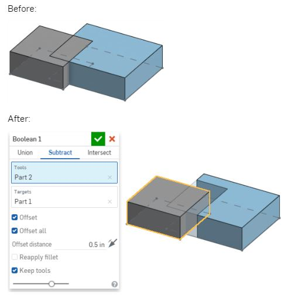

Modeling - Multi-Part Part Studio
建模 - 多零件工作室
學習要點:
Multi-Part Modeling
Unlike other CAD systems, you may make as many parts in a single Part Studio as you want. This technique is called Multi-Part Modeling and it’s very powerful because, as we’ve seen, you can make parts that highly depend on one another.
Buttom-Up Design
Bottom-Up Design is when a product is designed by creating sketches, then features, then parts (often one per Part Studio), and then assemblies. In this approach, the geometry is created starting with the lower level entities (like 2D lines and circles) up the hierarchy to the highest level assembly (such as the final product being built).
Top-Down Design
Top-Down Design is when the shape of an overall product is sketched first, and then different regions of that sketch are used to create the lower level parts and their features. Top-Down is a more intuitive way to approach a design because typically we, as designers, envision the final product first, then as time goes on, we refine the concept into finer and finer detail.
Modify parts by merging parts together (Union), removing a tool part from a target (Subtract), or calculating the intersection between two or more parts (Intersect).
合併(Union) - 合併零件。
相減(Subtract) - 移除兩個零件重疊的地方。
相交(Intersect) - 合併零件，僅在重疊的地方保留材料。
boolean subtract

可以使用offset來偏移被加工的零件
也可以使用keep tools 保留加工零件
參考資料:
http://mde.tw/cadp2018/content/OnshapeWeek%203.html
https://cad.onshape.com/help/Content/booleanparts.htm